(Ausrufezeichen) und eine Idee immer durch ein
(Ausrufezeichen) und eine Idee immer durch ein  (Glühbirne) gekennzeichnet.
(Glühbirne) gekennzeichnet. Benutzerhandbuch
Klarschiff Backend
erstellt von
Änderungsübersicht
| Version | Datum | Bearbeiter | Beschreibung |
| 1.0 | 10.2011 | Stefan Audersch | |
| 1.1 | 10.2011 | Marcus Kröller | Verlinkungen und kleinere Korrekturen |
| 1.2 | 08.2015 | Frank Hösel | Überarbeitung |
Inhaltsverzeichnis
Klarschiff unterteilt sich in zwei Bereiche, das Frontend und das Backend.
Mithilfe des Frontends kann der Bürger seine Anliegen im Bezug auf den öffentlichen Raum an die Verwaltung richten. Die Meldungen der Bürger können mit einem PC oder auch über eine mobile Version mit einem Handy, Smartphone oder Tablet erstellt werden. Neben der Erstellung von Meldungen hat der Nutzer die Möglichkeit, sich über andere Meldungen zu informieren, andere Meldungen zu unterstützen, bei Meldungen einen Missbrauch zu melden oder GeoRSS-Feed zu abonnieren.
Das Backend ist das System für die Verwaltung, in dem die Meldungen registriert, verwaltet und bearbeitet werden. Die Zuweisung von Meldungen an die richtigen Ansprechpartner in der Verwaltung erfolgt dabei im System automatisch. Externe Dienstleister, zum Beispiel Entsorgungsdienstleister, können über das Backend ebenfalls eingebunden werden.
Die Begriffe Meldung und Vorgang werden im Zusammehang mit „Klarschiff” synonym verwendet. Im Frontend spricht man von einer Meldung („Der Bürger erstellt eine Meldung an die Verwaltung.”). Im Backend dagegen wird von einem Vorgang gesprochen („Der Vorgang kann im Backend bearbeitet werden”). Die Unterscheidung wird gemacht, da die Begriffe jeweils aus der Sicht der Betrachtung (Bürger, Verwaltung) intuitiver zu verwenden sind.
Bei einer Meldung kann es sich sowohl um ein Problem, als auch um eine Idee handeln. Problem und Idee sind sogenannte Vorgangstypen. Ein Problem wird in Klarschiff immer durch ein (Ausrufezeichen) und eine Idee immer durch ein (Glühbirne) gekennzeichnet.
Zur näheren Beschreibung sind jeder Meldung eine Haupt- und eine Unterkategorie zugeordnet. Die Angaben der Kategorien sind für jeden Vorgang Pflicht. Die möglichen Kategorien für einen Vorgang sind vom gewählten Vorgangstyp abhängig.
Bei der Auswahl bestimmter Kategorien während der Erstellung eines neuen Vorganges wird der Ersteller gegebenenfalls zur genaueren Beschreibung durch Betreff und Details aufgefordert. Die Felder werden mit einem * und einem Hinweistext gekennzeichnet, wenn diese angegeben werden müssen.
Jeder Vorgang wird durch verschiedene Vorgangsdaten beschrieben. Zu den Vorgangsdaten gehören:
Die Vorgangsdaten werden bei der Erstellung eines Vorganges angegeben. Vorgangstyp, Ort, Haupt- und Unterkategorie sind Pflichtangaben.
Im Frontend gehört die Angabe der E-Mail zu den Pflichtangaben, da diese für die Erstellung der Bestätigungs-E-Mail notwendig ist. Die Angabe von Details und Betreff können bei der Auswahl bestimmter Kategorien ebenfalls zu Pflichtangaben werden.
Bei der Erstsichtung bzw. beim Bearbeiten eines Vorganges können einige Vorgangsdaten durch den Sachbearbeiter verändert werden. Dabei können die Kategorien angepasst und der Betreff bzw. die Details verändert werden. Eine Bearbeitung des Fotos ist ebenfalls möglich.
Jeder Vorgang bekommt zu seiner eindeutigen Identifikation eine Vorgangsnummer. Die Vorgangsnummer ist sowohl in der Ergebnistabelle bei der Suche als auch in den Vorgangskurzinformationen zu finden. Die Vorgangsnummern beginnen bei 1 und werden entsprechend hochgezählt.

Abbildung: Vorgangsnummer in der Ergebnistabelle
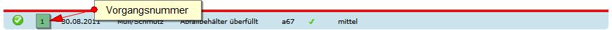
Abbildung: Vorgangsnummer bei den Vorgangskurzinformationen
Jeder Vorgang hat einen Status. Über den Vorgangsstatus ist ersichtlich, wie der aktuelle Stand des Vorganges ist. Es existieren die folgenden Status:
 gemeldet
gemeldet offen
offen in Bearbeitung
in Bearbeitung wird nicht bearbeitet Duplikat
wird nicht bearbeitet Duplikat abgeschlossen
abgeschlossen gelöscht
gelöschtDie Status unterteilen sich in die beiden Gruppen offen und abgeschlossen.
Ein im Frontend neu erstellter Vorgang ist nach der Erstellung automatisch im Status gemeldet. Nach erfolgreicher Bestätigung wechselt der Status in offen. Im Backend erstellte Vorgänge sind direkt nach der Erstellung im Status offen. Nach der Erstsichtung eines Vorganges wechselt der Status zu in Bearbeitung. Zwischen den Status in Bearbeitung, wird nicht bearbeitet, Duplikat, abgeschlossen und gelöscht kann bei der Bearbeitung eines Vorganges gewechselt werden.
Zur näheren Erläuterung eines Status hat der Sachbearbeiter die Möglichkeit einen Statuskommentar abzulegen. Für den Statuskommentar steht ein Freitext zur Verfügung. Um die Arbeit mit dem Statuskommentar zu erleichtern, existieren verschiedene Vorlagen, die gewählt, übernommen und dann bei Bedarf angepasst werden können.
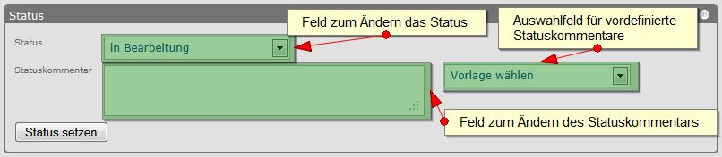
Abbildung: Bearbeiten des Status eines Vorganges
Der Status und der Statuskommentar eines Vorganges wird im Backend an verschiedenen Stellen dargestellt.
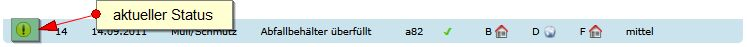
Abbildung: Vorgangsstatus in den Vorgangskurzinformationen
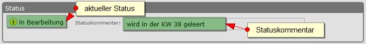
Abbildung: Vorgangsstatus in der Übersicht zu einem Vorgang
Status und Statuskommentar sind ebenfalls im Frontend für den Bürger sichtbar.
Jeder Vorgang hat einen aktuellen Status. die verschiedenen Status lassen sich in die beiden Gruppen offen und abgeschlossen einteilen. Zu den offenen gehören die Status:
Zu den abgeschlossenen gehören die folgenden Status:
Nur abgeschlossene Vorgänge können archiviert werden.
Um die Übersicht in der Suchanzeige zu bewahren, existiert ein Archiv. Hierhin werden automatisch abgeschlossene Vorgänge nach einer definierten Zeit verschoben. Es besteht ebenfalls die Möglichkeit, Vorgänge manuell zu archivieren bzw. bereits archivierte Vorgänge aus dem Archiv wiederherzustellen.

Abbildung: Vorgang archivieren
Archivierte Vorgänge werden in der einfachen Suche nicht angezeigt. Die Anzeige von archivierten Vorgängen ist mit Hilfe der erweiterten Suche möglich.
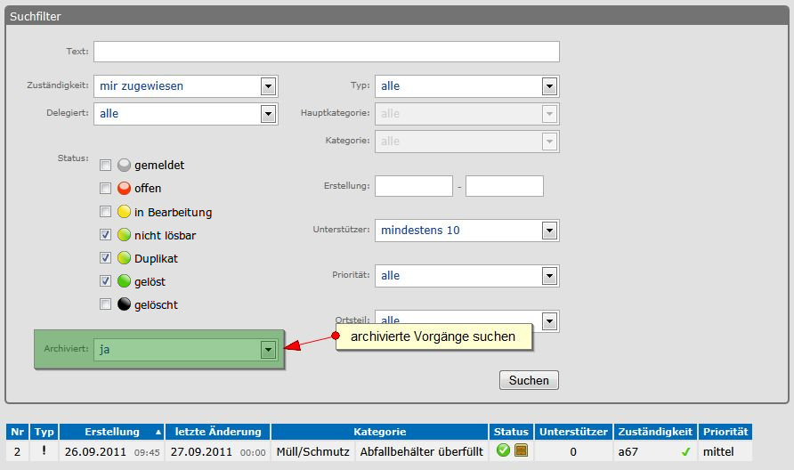
Abbildung: Archivierte Vorgänge suchen
Archivierte Vorgänge werden in der Suche, in der Übersicht zu einem Vorgang oder in den Vorgangskurzinformationen durch das Symbol  gekennzeichnet.
gekennzeichnet.
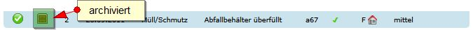
Abbildung: Kennzeichnung eines archivierten Vorganges in den Vorgangskurzinformationen
Für die interne Kommunikation können Kommentare zu einem Vorgang erstellt werden. Die Kommentare sind nur für die Sachbearbeiter und Externe im Backend sichtbar.
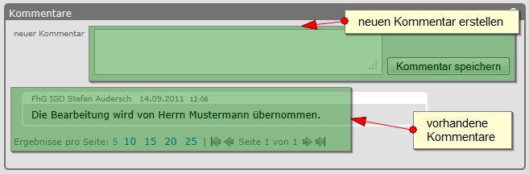
Abbildung: Darstellung und Bearbeiten von Kommentaren
Bei der Erstellung eines Vorganges können unter anderem Betreff, Details und ein Foto angegeben werden. Mit diesen Vorgangsdaten kann jedoch auch Missbrauch betrieben werden. Diese Vorgangsdaten werden daher erst nach einer Erstsichtung für die Öffentlichkeit bereitgestellt. Bei der Erstsichtung hat der Sachbearbeiter die Möglichkeit, die Daten zu ändern bzw. deren Freigabestatus anzupassen. Der Freigabestatus legt dabei fest, für wen die jeweiligen Informationen sichtbar sind. Beim Freigabestatus gibt es drei Möglichkeiten:
 extern: Die Daten sind sowohl für den Sachbearbeiter und Externe im Backend als auch für die Bürger im Frontend sichtbar.
extern: Die Daten sind sowohl für den Sachbearbeiter und Externe im Backend als auch für die Bürger im Frontend sichtbar. intern: Die Daten sind nur für den Sachbearbeiter und Externe im Backend sichtbar.
intern: Die Daten sind nur für den Sachbearbeiter und Externe im Backend sichtbar. gelöscht: Der Freigabestatus ist nur beim Foto verfügbar. Das Foto ist dabei weder im Backend noch im Frontend sichtbar.
gelöscht: Der Freigabestatus ist nur beim Foto verfügbar. Das Foto ist dabei weder im Backend noch im Frontend sichtbar.Der Freigabestatus kann bei der Erstsichtung oder beim Bearbeiten eines Vorganges angepasst werden.
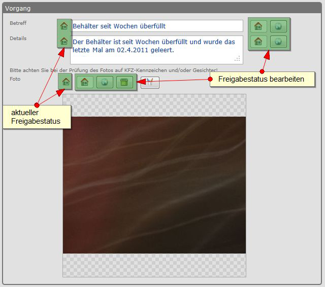
Abbildung: Bearbeiten des Freigabestatus bei der Erstsichtung
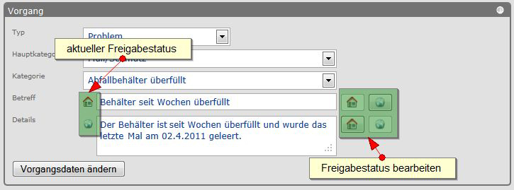
Abbildung: Bearbeiten des Freigabestatus
Der aktuelle Freigabestatus eines Datenfeldes wird jeweils neben dem Datenfeld angezeigt und ist zudem bei den Vorgangskurzinformationen dargestellt.
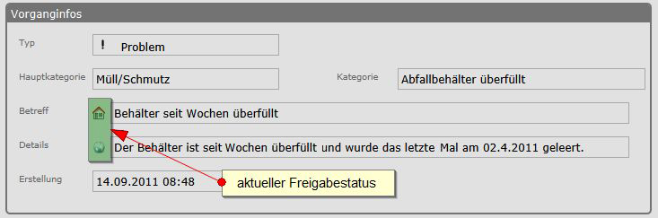
Abbildung: Freigabestatus bei der Übersicht eines Vorganges

Abbildung: Freigabestatus bei den Vorgangskurzinformationen
Jedem Vorgang ist eine Priorität zugeordnet. Es existieren die folgenden drei Prioritäten: niedrig, mittel und hoch. Standardmäßig erhält jeder Vorgang die Priorität mittel. Bei der Vorgangsbearbeitung kann die Priorität bearbeitet werden.

Abbildung: Priorität bearbeiten
Die Darstellung der Prioritäten erfolgt beispielsweise in der Ergebnistabelle, bei den Vorgangskurzinformationen und bei der Übersicht zu einem Vorgang.

Abbildung: Priorität in den Vorgangskurzinformationen
In der Ergebnistabelle mit den Vorgängen kann nach der Priorität sortiert werden.

Abbildung: Priorität in der Ergebnistabelle
Damit gleiche Vorgänge bzw. Meldungen nicht mehrfach von unterschiedlichen Bürgern gemeldet werden, können Bürger andere Vorgänge unterstützen. Hierbei werden bei einem Vorgang jeweils die Anzahl der Unterstützungen gezählt. Die Anzahl der Unterstützungen kann ein Indiz für die Wichtigkeit bzw. Dringlichkeit einer Meldung sein.
Bei der Erstellung einer Unterstützung im Frontend muss eine E-Mail für die Bestätigungs-E-Mail angeben werden. Erfolgt die Bestätigung nicht innerhalb eines Tages, wird die Unterstützung gelöscht.
Im Backend werden Ideen erst ab einer bestimmten Anzahl von abgegebenen Unterstützungen (aktuell 10) in der Suche angezeigt. Die Anzeige aller Ideen, auch die mit noch nicht genügend Unterstützungen, ist in der erweiterten Suche mit entsprechenden Rechten möglich.
Stellt ein Bürger oder ein Sachbearbeiter fest, dass mit einem Vorgang ein Missbrauch betrieben wird, so kann dieser für den Vorgang eine Missbrauchsmeldung erstellen. Missbrauchsmeldungen können sowohl über das Frontend als auch über das Backend erstellt werden. Vorgänge mit einer offenen Missbrauchsmeldung werden sofort aus der Ansicht im Frontend entfernt und sind somit für die Bürger nicht mehr sichtbar.
Im Backend werden Missbrauchsmeldungen durch die Farbe  besonders gekennzeichnet. Vorgänge mit Missbrauchsmeldungen stehen bei den Suchseiten immer ganz oben. Der Sachbearbeiter hat die Möglichkeit, den Vorgang entsprechend zu bearbeiten, z.B. Kategorie, Betreff oder Details anzupassen, beim Foto Dinge unkenntlich zu machen oder den Status des Vorganges auf gelöscht zu setzen. Danach kann die Missbrauchsmeldung vom Sachbearbeiter geschlossen werden.
besonders gekennzeichnet. Vorgänge mit Missbrauchsmeldungen stehen bei den Suchseiten immer ganz oben. Der Sachbearbeiter hat die Möglichkeit, den Vorgang entsprechend zu bearbeiten, z.B. Kategorie, Betreff oder Details anzupassen, beim Foto Dinge unkenntlich zu machen oder den Status des Vorganges auf gelöscht zu setzen. Danach kann die Missbrauchsmeldung vom Sachbearbeiter geschlossen werden.
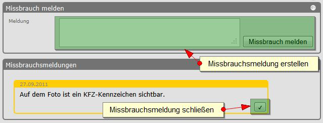
Abbildung: Missbrauchsmeldung
Werden vom Frontend aus Meldungen, Unterstützungen oder Missbrauchsmeldungen erstellt, so bedarf es hierbei jeweils einer Bestätigung. Hierzu wird nach der Erstellung der Meldungen, Unterstützungen oder Missbrauchsmeldungen jeweils eine E-Mail an die angegebene E-Mail-Adresse mit einem Bestätigungslink versandt. Wird der Bestätigungslink vom Ersteller nicht innerhalb eines Tages aufgerufen, so verfällt die entsprechende Meldung, Unterstützung oder Missbrauchsmeldung.
Meldungen bzw. Vorgänge, die von einem Ersteller noch nicht bestätigt wurden, sind vom Status als gemeldet gekennzeichnet. Die Vorgänge sind im Backend nur über die erweiterte Suche erreichbar, vorausgesetzt man hat die entsprechenden Rechte hierfür. Vorgänge mit dem Status gemeldet können nicht bearbeitet werden.
Zum Arbeiten mit dem Backend muss man sich als Benutzer beim System anmelden. Den Benutzern werden dazu verschiedene Rollen zugeordnet. Dazu gehören unter anderem die Rollen, die Aussagen über die Zuständigkeiten des Benutzers machen. Allgemein lassen sich die Rollen in vier Hauptrollen unterteilen:
Die Verwaltung der Benutzer und Rollen erfolgt im LDAP der Verwaltung.
Zur Bearbeitung eines Vorganges wird dem Vorgang eine Zuständigkeit zugeordnet. Entsprechend den Rollen eines Benutzers werden diesem auch die Vorgänge angezeigt, für die er zuständig ist.
Bei der Zuständigkeit gibt es zwei unterschiedliche Status.
 akzeptiert: Die Zuständigkeit wurde von der zuständigen Gruppe akzeptiert.
akzeptiert: Die Zuständigkeit wurde von der zuständigen Gruppe akzeptiert.Die aktuelle Zuständigkeit und deren Status sind in der Ergebnistabelle, bei den Vorgangskurzinformationen, der Übersicht zum Vorgang und an weiteren Stellen dargestellt.
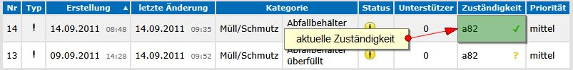
Abbildung: Zuständigkeit in der Ergebnistabelle
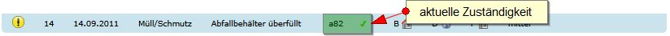
Abbildung: Zuständigkeit bei den Vorgangskurzinformationen
Bei einem neu erstellten Vorgang wird die Zuständigkeit automatisch von dem Zuständigkeitsfinder zugeordnet. Bei der Erstsichtung bzw. beim Bearbeiten eines Vorganges kann die Zuständigkeit durch den Sachbearbeiter angepasst werden.
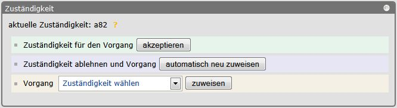
Abbildung: Bearbeiten der Zuständigkeit
Bei der Änderung der Zuständigkeit stehen dem Sachbearbeiter entsprechend seinen Rollen und der aktuellen Zuständigkeit des Vorganges verschiedene Optionen zur Verfügung, die zur leichteren Unterscheidung farblich markiert sind:
 übernehmen bzw. akzeptieren: Die Zuständigkeit kann für einen Vorgang akzeptiert werden oder für eine bestimmte Rolle übernommen und akzeptiert werden.
übernehmen bzw. akzeptieren: Die Zuständigkeit kann für einen Vorgang akzeptiert werden oder für eine bestimmte Rolle übernommen und akzeptiert werden.Werden Vorgänge nicht direkt durch die Verwaltung bearbeitet, sondern durch externe Anbieter, so können Vorgänge an diese delegiert werden. Voraussetzung dafür ist, dass die externen Anbieter hierfür einen eingerichteten Zugang für das Backend haben.
Berechtigte Mitarbeiter externer Firmen können sich beim Backend anmelden und haben hier die Möglichkeit, die ihnen zugewiesenen Vorgänge zu bearbeiten. Im Gegensatz zu den Sachbearbeitern haben sie hierbei jedoch nur einen eingeschränkten Funktionsumfang.
Das Delegieren eines Vorganges kann beim Bearbeiten eines Vorganges erfolgen.

Abbildung: Delegieren eines Vorganges
Externe Mitarbeiter werden täglich über die ihnen neu zugeordneten Vorgänge per E-Mail informiert.
An wen ein Vorgang delegiert wurde, ist sowohl im Ergebnis der Vorgangssuche, in der Vorgangskurzübersicht und in der Übersicht zu einem Vorgang sichtbar.
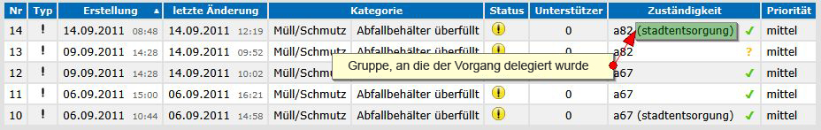
Abbildung: Informationen zum Delegieren in der Ergebnistabelle
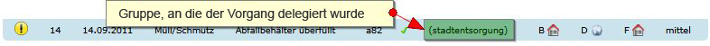
Abbildung: Informationen zum Delegieren in den Vorgangskurzinformationen
Das Backend führt in regelmäßigen Abständen bzw. zu regelmäßigen Zeiten automatische Jobs auf dem Server aus. Hierzu gehören die folgenden Jobs:
Damit ein Missbrauch des Systems eingeschränkt werden kann, können verschiedene E-Mail-Adressen von der Nutzung des Systems ausgeschlossen werden. Dabei handelt es sich in der Regel um sogenannte Wegwerf-E-Mail-Adressen (Trashmail), die durch verschiedene Anbieter im Internet angeboten werden. Der Admin des Systems hat im Adminbereich die Möglichkeit, die Liste der Anbieter zu aktualisieren.
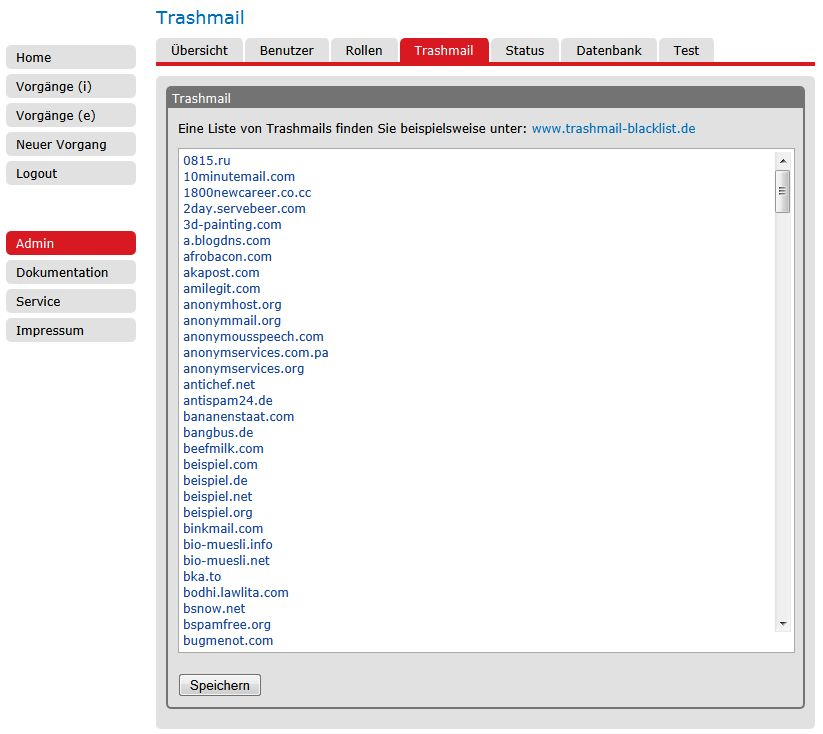
Abbildung: Trashmail bearbeiten
Im Frontend werden E-Mail-Adressen von Trashmail-Anbietern nicht akzeptiert, so dass eine Erstellung von Vorgängen, Unterstützungen und Missbrauchsmeldungen damit nicht möglich ist.
Für die Arbeit mit dem Backend muss man als Benutzer angemeldet sein. Je nachdem welche Rechte man als Benutzer hat, stehen einem entsprechende Ansichten und Funktionen zur Verfügung. Stehen einem nicht die notwendigen Rechte zur Verfügung, so ist dies mit dem Administrator des Systems zu klären.
Der Login erfolgt über eine Login-Seite auf der man seinen Benutzernamen und sein Passwort angibt. Das System ist für die Authentifizierung und Authorisierung mit dem LDAP der Verwaltung verbunden, so dass hier die üblichen Anmeldedaten verwendet werden können.
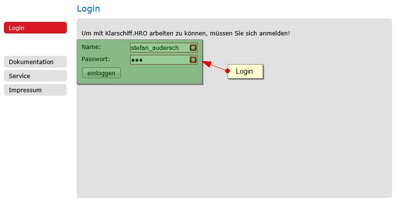
Abbildung: Login
Zum Abmelden beim Backend ist im Hauptmenü der Punkt Logout zu finden.
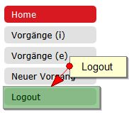
Abbildung: Logout
Das Benutzerinterface unterteilt sich in 5 Bereiche. Links befindet sich das Hauptmenü. Im oberem Hauptteil der Seite befinden sich die Karteireiter und die Vorgangskurzinformationen. Die eigentlichen Informationen sind im Seiteninhalt. Hilfestellungen bei der aktuellen Arbeit mit dem Backend findet man im Bereich Hilfe.
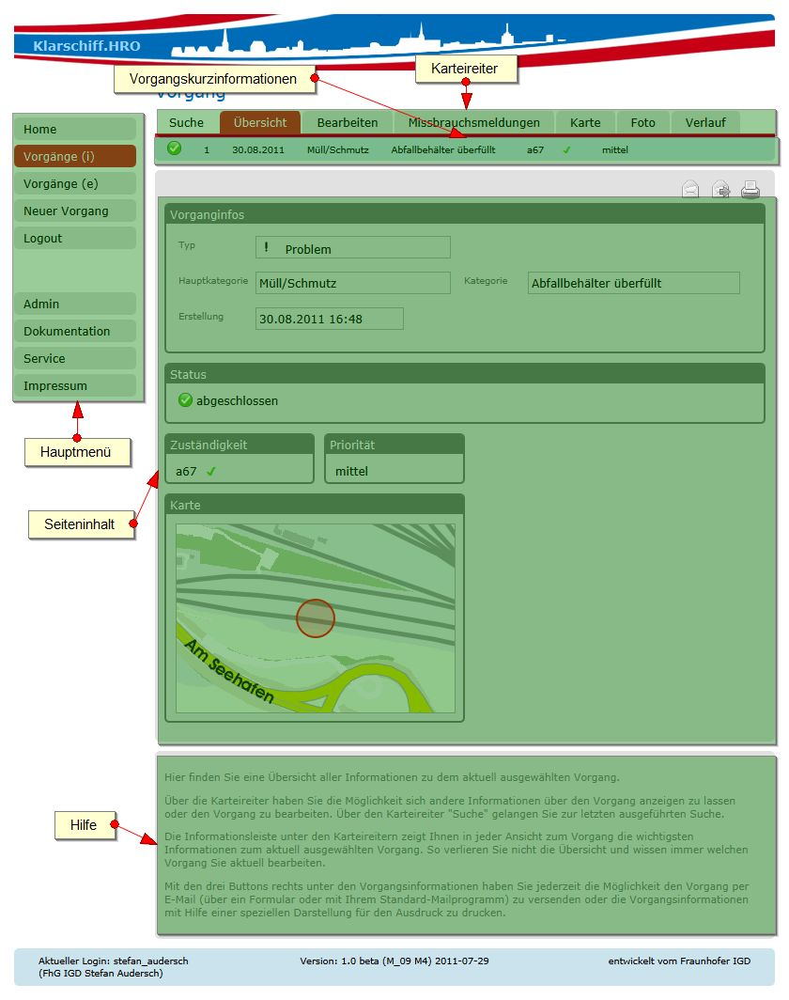
Abbildung: Benutzerinterface
Die Vorgangskurzinformationen im oberen Bereich der Seiten stellen bei einem gewählten Vorgang immer die wichtigsten Daten des Vorganges dar. Hierzu gehören die folgenden Informationen

Abbildung: Vorgangskurzinformationen
Um auf den Seiten genügend Platz für die individuell benötigten Informationen und Funktionen zu haben, existieren Blöcke, die auf- und zugeklappt werden können. Die Blöcke sind rechts in der Titelleiste durch ein  gekennzeichnet. Durch Klicken auf die Titelleiste werden die Blöcke auf- und zugeklappt. Der Status des Blockes wird gespeichert, so dass beim nächsten Besuch der Seite sich die Blöcke wieder im vorherigen Zustand befinden.
gekennzeichnet. Durch Klicken auf die Titelleiste werden die Blöcke auf- und zugeklappt. Der Status des Blockes wird gespeichert, so dass beim nächsten Besuch der Seite sich die Blöcke wieder im vorherigen Zustand befinden.
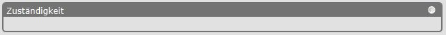
Abbildung: zugeklappter Block
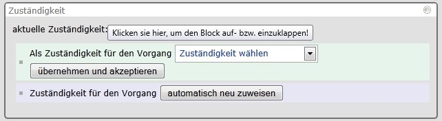
Abbildung: aufgeklappter Block
Vorgänge können im Frontend und im Backend erstellt werden. Im Gegensatz zum Frontend muss beim Backend keine E-Mail-Adresse angegeben werden, da eine Bestätigung hier nicht notwendig ist.
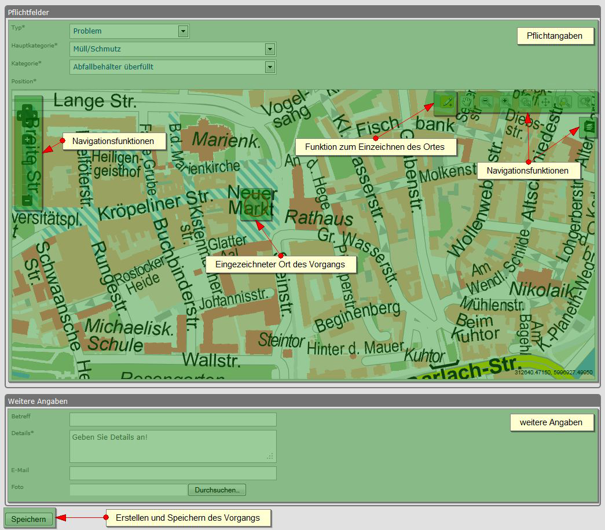
Abbildung: Vorgang erstellen
Beim Erstellen eines Vorganges sind verschiedene Angaben zu tätigen. Pflichtangaben sind dabei der Vorgangstyp, die Hauptkategorie, die Unterkategorie und der Ort. Da zwischen Vorgangstyp, Haupt- und Unterkategorie Abhängigkeiten bestehen, können diese nur in der entsprechenden Reihenfolge eingetragen werden. Die Felder Betreff und Details sind abhängig von der gewählten Kategorie und sind somit optionale Angaben oder Pflichtangaben. Die Felder werden mit einem * und einem Hinweistext gekennzeichnet, wenn diese angegeben werden müssen. Zu den optionalen Feldern gehören die E-Mail-Adresse und das Foto. Als Foto kann eine Datei aus dem Dateisystem herausgesucht und hochgeladen werden.
Jedem Vorgang ist ein Ort zugewiesen. Der Ort wird dabei bei der Erstellung eines Vorganges sowohl im Frontend als auch im Backend angegeben.

Abbildung: Einzeichnen des Ortes in einer Karte
Im Backend erfolgt das Einzeichnen des Ortes mit Hilfe einer Karte. Hierzu kann in der Karte frei navigiert werden, bzw. es kann zur Kartenansicht umgestellt werden. Zum Einzeichnen des Ortes eines Vorganges wird zuvor die entsprechende Funktion im Kartenfenster gewählt. Durch einen Einfach-Klick auf die gewünschte Position in der Karte wird der Ort festgelegt. Bei wiederholtem Klick auf eine Position in der Karte wird der Ort des Vorganges entsprechend an die neue Position gesetzt.
Im Backend stehen dem Benutzer zwei Suchen zur Verfügung, die einfache und die erweiterte Suche.

Abbildung: Einfache Vorgangssuche
Bei der einfachen Suche werden alle Vorgänge angezeigt, die dem aktuellen Nutzer zugeordnet und nicht archiviert sind. Bei der Anzeige der Vorgänge kann man zwischen den offenen und abgeschlossenen Vorgängen wählen.
Durch den Klick auf einen Vorgang (eine Zeile) in der Tabelle gelangt man zu dem Vorgang. Hier kann der Vorgang vom Benutzer bearbeitet werden.
In der Ergebnistabelle werden verschiedene Daten der Vorgänge dargestellt, anhand derer die Vorgänge sortiert werden können. Zum Sortieren der Vorgänge klickt man auf das gewünschte Feld im Tabellenkopf. Ein nochmaliger Klick auf das gleiche Feld dreht die Sortierreihenfolge um.
Unterhalb der Ergebnistabelle befindet sich ein Bereich zum Navigieren in der Ergebnistabelle. Bei einer großen Anzahl von Vorgängen in der Anzeige kann hier vor- bzw. zurückgeblättert werden. Die Anzahl der Vorgänge pro Seite kann ebenfalls geändert werden.
Die Ergebnistabelle kann in eine Excel-Datei exportiert oder in einer Karte angezeigt werden.
Im Backend stehen dem Benutzer zwei Suchen zur Verfügung, die einfache und die erweiterte Suche.

Abbildung: Erweiterte Vorgangssuche
Bei der erweiterten Suche kann der Benutzer individuell angeben, nach welchen Kriterien die Vorgänge gefiltert werden sollen. Dabei stehen manche Filterkriterien nur Benutzern mit bestimmten Rechten zur Verfügung.
Die Vorgänge können nach den folgenden Kriterien gefiltert werden:
Durch den Klick auf einen Vorgang (eine Zeile) in der Tabelle gelangt man zu dem Vorgang. Hier kann der Vorgang vom Benutzer bearbeitet werden.
In der Ergebnistabelle werden verschiedene Daten der Vorgänge dargestellt, anhand derer die Vorgänge sortiert werden können. Zum Sortieren der Vorgänge klickt man auf das gewünschte Feld im Tabellenkopf. Ein nochmaliger Klick auf das gleiche Feld dreht die Sortierreihenfolge um.
Unterhalb der Ergebnistabelle befindet sich ein Bereich zum Navigieren in der Ergebnistabelle. Bei einer großen Anzahl von Vorgängen in der Anzeige kann hier vor- bzw. zurückgeblättert werden. Die Anzahl der Vorgänge pro Seite kann ebenfalls geändert werden.
Die Ergebnistabelle kann in eine Excel-Datei exportiert oder in einer Karte angezeigt werden.
Die Ergebnistabelle der Vorgangssuche (einfache Suche und erweiterte Suche) kann mit Hilfe des Button  in eine Excel-Datei exportiert werden. Die Excel-Datei kann dann für die weitere Arbeit verwendet werden.
in eine Excel-Datei exportiert werden. Die Excel-Datei kann dann für die weitere Arbeit verwendet werden.
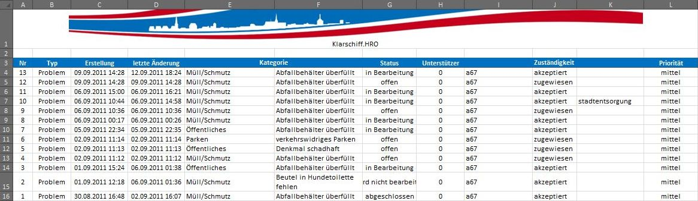
Abbildung: Export von Vorgängen in eine Excel-Datei
Beim Exportieren werden alle Ergebnisse der Suche berücksichtigt, d.h. alle Ergebnisseiten werden mit in die Excel-Datei übernommen.
Das Suchergebnis der Vorgangssuche (einfache Suche und erweiterte Suche) kann mit Hilfe des Buttons 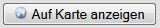 in einer Karte dargestellt werden. Dabei werden alle Ergebnisse (aus allen Ergebnisseiten) der Suche berücksichtigt.
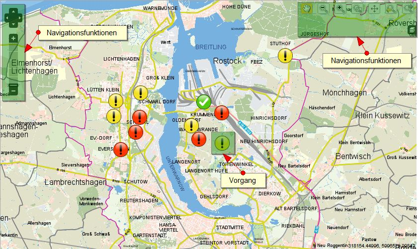
Abbildung: Darstellung von Vorgängen in einer Karte
In der Karte kann frei navigiert werden. Die einzelnen Vorgänge werden durch ein Symbol am entsprechenden Ort des Vorganges in der Karte angezeigt. Das Symbol stellt den Vorgangstyp und den Status des Vorganges dar. Durch einen Klick auf das Symbol gelangt man zum entsprechenden Vorgang.
Bevor ein Vorgang bearbeitet und für den Bürger im Frontend vollständig angezeigt wird, muss für den Vorgang von einem Sachbearbeiter eine Erstsichtung erfolgen. Die Erstsichtung besteht aus zwei Teilen. Im ersten Teil wird die Zuständigkeit akzeptiert bzw. angepasst. Im zweiten Teil können verschiedene Vorgangsdaten geändert sowie der Freigabestatus für bestimmte Vorgangsdaten angepasst werden. Nach der Erstsichtung wechselt der Status des Vorganges von offen auf in Bearbeitung.
Zu einem Vorgang gehören verschiedene Vorgangsdaten. Einige davon (Typ, Haupt- und Unterkategorie, Betreff und Details) können beim Bearbeiten eines Vorganges geändert werden.
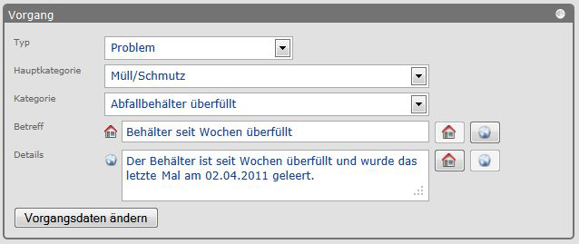
Abbildung: Bearbeiten der Vorgangsdaten
Die Übersichtsseite zu einem Vorgang stellt alle Informationen zu einem Vorgang dar. Hier sind die Vorgangsdaten, der Status, Kommentare und Zuständigkeiten zu finden. Eine größere Darstellung der Karte und des Fotos erreicht man durch einen Klick auf die Karte bzw. das Foto.

Abbildung: Übersichtsseite zu einem Vorgang
Alle Aktionen, die einen Vorgang betreffen, werden protokolliert. In der Verlaufsansicht werden diese Aktionen in zeitlicher Reihenfolge dargestellt. Dabei stehen die neuesten Aktionen immer oben. Zu einem Eintrag im Verlauf gehört neben der Beschreibung der Aktion immer, wann etwas getan wurde und von wem.
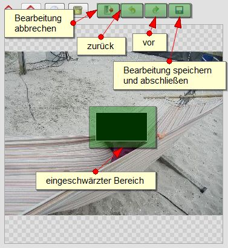
Abbildung: Verlauf
Wenn ein Foto zu einem Vorgang hochgeladen wurde, kann dieses bei der Erstsichtung oder beim Bearbeiten eines Vorganges bearbeitet werden. Dabei kann nicht das Foto ausgetauscht, sondern gewählte Bereiche des Bildes können ausgeschwärzt werden. Die Aktivierung der Fotobearbeitung erfolgt über den Button  . Durch das Zeichnen von Rechtecken auf dem Bild mit der Maus werden die zu schwärzenden Bereiche definiert. Bei der Bearbeitung kann vor- und zurückgesprungen werden. Die Bearbeitung kann ggf. abgebrochen werden, wobei der vorherige Zustand des Fotos wiederhergestellt wird. Beim Speichern der Änderungen werden die schwarzen Bereiche endgültig im Foto gespeichert und können später nicht wieder entfernt werden.
. Durch das Zeichnen von Rechtecken auf dem Bild mit der Maus werden die zu schwärzenden Bereiche definiert. Bei der Bearbeitung kann vor- und zurückgesprungen werden. Die Bearbeitung kann ggf. abgebrochen werden, wobei der vorherige Zustand des Fotos wiederhergestellt wird. Beim Speichern der Änderungen werden die schwarzen Bereiche endgültig im Foto gespeichert und können später nicht wieder entfernt werden.
Abbildung: Bearbeiten eines Fotos
Der Ort eines Vorganges wird in einer Karte dargestellt bzw. kann über die Karte eingezeichnet werden. Zum Arbeiten mit der Karte existieren die folgenden Funktionen, die je nach Einbindung der Karte zur Verfügung stehen:

Abbildung: Kartendarstellung mit Funktionen Navigieren und Einzeichnen einer Position
Der Ort des Vorganges wird bei der Darstellung bzw. beim Einzeichnen als ein roter Kreis dargestellt. In der Ansicht mit mehreren Vorgängen wird jeder Vorgang durch ein Symbol dargestellt.
In der Übersichtsseite wird der Ort des Vorganges durch eine kleine Karte ohne Navigationsfunktionen dargestellt. Durch einen Klick auf die Karte wechselt man in die Darstellung mit einer großen Karte mit Navigationsfunktionen.
Die Informationen eines Vorganges können per E-Mail an eine beliebige E-Mail-Adresse weitergeleitet werden. Zum Weiterleiten muss man einen Vorgang gewählt haben. Über die Briefsymbole ( und
und  ) am oberen rechten Rand der Seite kann das Weiterleiten erfolgen. Hierbei gibt es zwei Möglichkeiten:
) am oberen rechten Rand der Seite kann das Weiterleiten erfolgen. Hierbei gibt es zwei Möglichkeiten:
Die Weiterleitung der Daten erfolgt mit Hilfe eines Formulars. Hierbei wird die E-Mail-Adresse des Empfängers angegeben und es kann ein individueller Text für den Empfänger geschrieben werden. Zusätzlich kann über Auswahlfelder definiert werden, welche Informationen mit in die E-Mail aufgenommen werden. 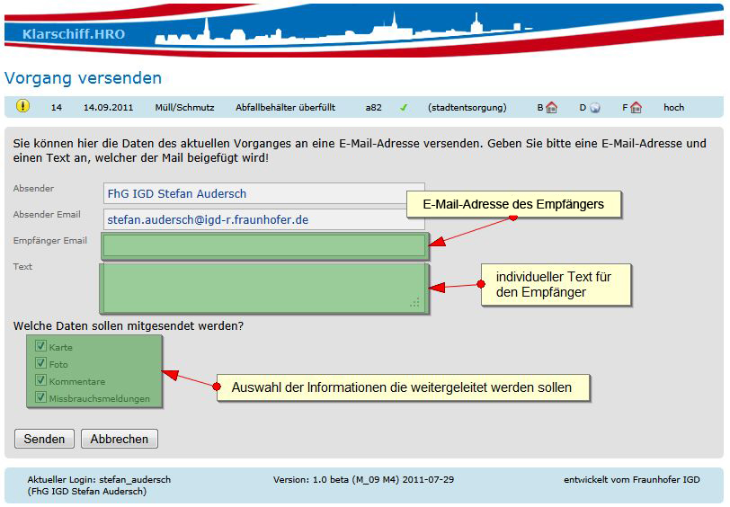
Abbildung: Formular zum Weiterleiten eines Vorganges
Das Weiterleiten erfolgt mit dem als Standard installierten Mailclient des Arbeitrechners. Dabei wird der Mailclient des Systems und darin eine E-Mail mit den Vorgangsdaten geöffnet. Die E-Mail kann individuell angepasst werden. Bei der Erstellung der E-Mail kann das Kontaktadressbuch des Mailclients verwendet werden.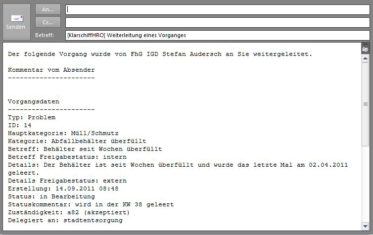
Abbildung: E-Mail zum Weiterleiten eines Vorganges im Mailclient des Arbeitsrechners
Wurde ein Vorgang ausgewählt, so lassen sich die Informationen über den Button  (oben rechts) drucken. Hierbei wird eine spezielle Seite geöffnet, in der die Informationen kompakt und auf einer Seite zusammengefasst dargestellt werden. Auf Menüpunkte wird in dieser Ansicht ebenfalls verzichtet.
(oben rechts) drucken. Hierbei wird eine spezielle Seite geöffnet, in der die Informationen kompakt und auf einer Seite zusammengefasst dargestellt werden. Auf Menüpunkte wird in dieser Ansicht ebenfalls verzichtet.
Dem Administrator werden im Adminbereich verschiedene Informationen und Funktionen zum Backend bereitgestellt. Hierzu gehören die folgenden Seiten: